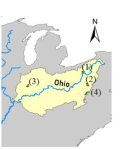

Improving Operational Flood Forecast
The operational hydrologists of the United States’ National Weather Service (NWS) develop river forecasts as guidance for those at risk of flood damage and update those flood forecasts in real-time as more information becomes available.
In this project, we developed a process to identify the relative importance of uncertain factors in Ohio River Forecast Center (OHRFC) flood forecasts, and empowering National Weather Service (NWS) forecasters to quickly reduce forecast errors through intelligent adjustment of model input data and state variables. We used ANOVA to identify the relative contribution to forecast uncertainty of each modifier, and Heat map, and bar chart to illustrate the results. We found that the effect of precipitation, soil moisture, and unit hydrograph shape, are most likely to provide improvement in flood forecast accuracy by studying the flood events sampled from 1990 to 2018 in the Ohio River. I presented the work at the EWRI conference in 2019 and co-authored a paper https://www.sciencedirect.com/science/article/pii/S2589915520300249#f0020 that was published in 2020.

paste("Hellow", "Wordl")